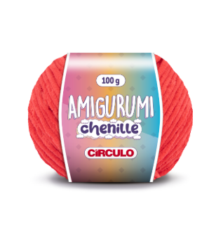

✦
Linhas • Tecidos • Papelaria
Linhas, Tecidos
e Papelaria.
Tudo o que você precisa para costurar, tricotar, estudar e organizar. Encontre fios de qualidade, tecidos exclusivos e itens fofos de papelaria na Magazine Moderno.
Lançamento Aveludado

Amigurumi Chenille Círculo
110m
Disponível